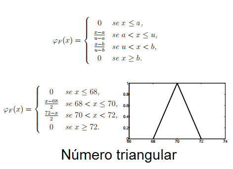
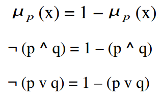

Nesta seção, você encontra temas sobre sistemas fuzzy
Histórico
Da lógica clássica até o fuzzy
Tratamento de incertezas
E imprecisões
Lógica Fuzzy
Regras e Controlador Fuzzy
Sistema Exemplo
Diagnóstico do câncer de mama
Aplicações
Outros sistemas fuzzy
Conclusão
Alguns pontos
Sobre
Este site discute brevemente sobre variados temas de sistemas fuzzy
Inteligentes, ministrada pelo Prof. Dr. Fernando Marar, da Unesp
de Bauru.
Os temas apresentados são:
Tratamento de incertezas e imprecisões;
Conjuntos e normas Fuzzy;
Regras de Composição Fuzzy;
Sistemas Baseados em regras Fuzzy;
Fuzzificação e Defuzzificação.
Nosso grupo
Desenvolvedores do projeto
Carolina Junqueira
Developer
Victor Albiero
Developer
Lucas Estevão
Developer
Rhuan Esborini
Developer
Tratamento de incertezas e imprecisões
A lógica clássica, ou aristotélica, é baseada na dualidade do ”verdadeiro ou falso” e
leis rígidas para aceitação de conclusões, por exemplo, Terceiro Excluído. Essa lógica é
baseada em premissas e conclusões que são alcançadas mediante a completa veracidade
ou falsidade das proposições (BOYER, 1996 apud SOUSA, 2005). Com isso, não é possível
aplicá-la sobre sistemas em que há proposições parcialmente verdadeiras ou parcialmente
falsas. Por exemplo, segundo a lógica aristotélica, seria possível responder: as taças da
figura abaixo estão cheias ou vazias?
A resposta para a pergunta anterior é: não dá. Não pela lógica
clássica. Há taças que estão ''mais'' cheias que as outras e/ou taças mais vazias
que as outras. Pela lógica clássica, estas proposições não poderiam ser
feitas, pois não há maneiras para representá-las. Para resolver esta questão,
surgiram as lógicas difusas nas quais uma proposição pode ter um valor
intermediário entre ''verdadeiro'' e ''falso''. Portanto, as sentenças passam a ter um
grau de pertinência a determinado conjunto.
Há limitações quando uma determinada situação possui inúmeras variáveis (SOUSA,
2005). É muito mais fácil expressar por palavras uma situação do que através do modelo
lógico bivalente (dualidade). Entretanto, manipular palavras é muito complicado, então é
necessário que haja uma maneira de modelar determinados cenários. Segundo Simões
e Shaw (2007), o cérebro humano possui a habilidade de manipular conjuntos e números
fuzzy. A lógica fuzzy permite representar a percepção da realidade.
A partir de uma lógica difusa é possível fazer o tratamento de incertezas e imprecisões situadas
na percepção da realidade. Segundo Yu, Hu e Wu (2007), a fuzzificação é ideal
para determinar equivalência de relações, similaridades, domínios e vizinhança
de uma relação. Por exemplo, ao observar várias pessoas com alturas próximas não é possível
afirmar qual é ”mais alta” e qual a ”mais baixa”. Portanto, mede-se todas as pessoas e,
encontrando os limites (mais alta e mais baixo), qualifica-se as outras pessoas de acordo
com o valor de sua altura. Para ilustrar esse exemplo, observe a figura abaixo.
Resumindo, na lógica difusa, as senteças possuem grau de pertinência, podem
assumir valor entre 0 e 1, ou seja, as respostas tem grau de veracidade. Os quantificadores
podem ser: "a maioria", "muitos", "poucos", "parcialmente", entre outros. Segundo o exemplo
visto, tratou-se da incerteza e da imprecisão que a lógica clássica não trata e não pode
expressar. A lógica fuzzy é um exemplo de lógica difusa.
Lógica Fuzzy
Princípios
A lógica fuzzy é um exemplo de lógica difusa, ou nebulosa, que admite que proposições assumam valores entre 0 e 1. Uma proposição é totalmente verdadeira se possui valor
1, e é totalmente falsa se possui valor 0. Os valores de verdade são expressos linguisticamente
(ex: parcialmente verdadeiro, muito verdadeiro, pouco falso, etc.). Já os predicados
são nebulosos, por exemplo: alto, baixo, muito baixo, médio, entre outros.
Esse tipo de lógica admite diferentes tipos de quantificadores em relação à lógica
clássica. Alguns exemplos são: pouco, muitos, vários, em torno de, frequentemente, etc. Já
quanto a probabilidade, na lógica clássica ela é expressa com um valor numérico, enquanto
na lógica fuzzy há uma ampla variedadede palavras para expressá-la, por exemplo: provável,
altamente provável, improvável, etc.
De modo geral, a lógica fuzzy trata de informações qualitativas de forma rigorosa
(GOMIDE; GUDWIN; TANSCHEIT, 2015). Isso ocorre para tratar imprecisões e incertezas e
manipular o conhecimento. Uma decorrência disso é que essa lógica é amplamente aplicada
em sistemas de tempo real, como a área de Internet das Coisas (IoT), pois simplifica o
modo de manipular e manter o controle das entrada e saídas, diminuindo a complexidade
de alguns tipos de sistemas.
Imagem de um elemento e grau de pertinência
Se imagem de um elemento é igual a 0, o elemento definitivamente não está em um
conjunto fuzzy. Se a imagem for 1, o elemento está definitivamente no conjunto. Se for um
valor entre 1 e 0, será o grau de pertinência do elemento no conjunto.
Conjuntos fuzzy
Esta lógica trata da noção de conjunto de um modo diferente. Enquanto, na matemá-
tica a ideia de conjunto é voltada para elementos que possuem características específicas
em comum, na lógica fuzzy, isso é generalizado. Além de incluir os extremos 0,1, os conjuntos
incluem outros valores entre [0,1]. Desta forma, essa lógica possui mais aplicabilidades
(SOUSA, 2005).
A teoria fuzzy permite que um elemento esteja parcialmente contido num conjunto.
Um conjunto fuzzy A, onde A é um subconjunto do universo U, deve ser descrito como um
conjunto de pares ordenados, onde o primeiro termo é o próprio elemento (x), e o segundo
termo é o grau de pertinência (µ(x)).
Um conjunto fuzzy pode ser considerado uma classe cujos limites não são claramente
definidos. Eles são chamados de difusos ou nebulosos. Na figura abaixo, há um exemplo
do conjunto A, quanto mais próximo do centro, maior o grau de pertinência. Na parte de
fora, o grau de pertinência é nulo.
Função de pertinência
É possível representar um conjunto fuzzy a partir das relação entre cada valor e seu
grau de pertinência. Essas funções representam uma curva que assume valores entre 0 e
1.
Uma função de pertinência não é única, ela é construída de acordo como se
quer avaliar determinado cenário. Pode-se determinar uma função que mais convém. Em
consequência, há diferentes representações gráficas para a mesma função de pertinência.
Portanto, uma função de pertinência é definida de acordo com o termo subjetivo do problema
em questão.
Universo de discurso
Todo conjunto fuzzy é um subconjunto de um Universo de Discurso. Esse universo é
um conjunto de valores finitos que contém todos os valores possíveis de estarem contidos
em seus subconjuntos fuzzy
Variáveis Linguísticas
Uma variável linguística é um conjunto de termos linguísticos, que são nomes ou
rótulos representados por conjuntos fuzzy. Ela é usada como símbolo mais adequado à
formulação de proposições.
Uma váriavel desse tipo se apresenta como uma palavra e/ou expressão em linguagem
natural ou artificial. Ela composta de uma quintupla (x, T(x), U, G, M(x)), onde:
- x é o nome da variável;
- T(x) é o conjunto dos nomes dos valores linguísticos de x, sendo cada um desses um
conjunto dentro de U;
- U é o Universo de Discurso;
- G representa a regra sintática que gera os nomes que compõe a variável;
- M(x) é a função de pertinência que representa o termo linguístico x.
Números fuzzy
Números fuzzy e conjuntos fuzzy podem ter o mesmo significado. Eles também
possuem relação de pertinência. Segundo Sousa (2005): "um número fuzzy N pode ser expresso como N = (α, c), onde é o Número
Real que coincide com o valor central de N. A constante c é a distância
entre α e os pontos da Reta dos Números Reais que possuem possibilidade
nula mais próximos de α".
A seguir, alguns tipos de números fuzzy, seguidos de suas funções genéricas de
pertinência, um exemplo aplicado e gráfico.

Conectivos lógicos
A lógica fuzzy utiliza os mesmos conectivos lógicos e notações que a lógica clássica. Nas figuras a seguir pode-se observar como é o funcionamento
de cada um deles na teoria fuzzy.

Regras de inferência
Para concluir qualquer coisa a partir de uma proposição e uma base de regras é
necessário um mecanismo que produza uma saída a partir de uma coleção de regras do
tipo "se-então". Há alguns tipos de inferência como Modus Ponens. O funcionamento de
algumas regras serão ilustradas através dos exemplos práticos.
Controlador fuzzy
A lógica difusa procura mapear variáveis numéricas para variáveis linguísticas, ou
seja, atribuir números à palavras (quente, muito longe, perto, frio, etc.). Segundo (GOMIDE;
GUDWIN; TANSCHEIT, 2015),"a idéia básica em controle fuzzy é modelar as ações a partir
de conhecimento especialista, ao invés de, necessariamente, modelar o processo em si".
Um controlador fuzzy consiste num conjunto de sentenças linguísticas ou regras,
as quais definem ações individuais. Ele é indicado para resolver problemas que exijam
capacidade do controlador se adaptar a mudanças. A configuração do sistema está na figura
na seguir.
Fuzzificação
A fuzzificação consiste nas seguintes funções: toma os valores numéricos das variáveis de entrada;
faz um mapeamento para condicionar os valores de entrada a universos normalizados;
defini as funções de permanência e converte os valores em conjuntos fuzzy.
Base do conhecimento
A base de dados é formada pelas definições dos conjuntos fuzzy que descrevem
os predicados de cada variável de entrada e de saída com suas respectivas funções de
pertinência as quais podem ser discretas ou contínuas.
Máquina de inferência
É o núcleo do controlador fuzzy. Ele infere ações de controle empregando implica-
ções fuzzy e as regras de inferência da lógica fuzzy. Além disso, simula tomada de decisões
baeadas nos conceitos fuzzy.
Deffuzificação
Efetua um levantamento, no qual compatibiliza os valores normalizados das variáveis
de saída com os valores dos unviversos de discurso reais das variáveis. Além disso,
transforma as ações de controle fuzzy inferidas em ações de controle não-fuzzy.
Project Name
Controlador Fuzzy
A lógica difusa procura mapear variáveis numéricas
para variáveis linguísticas, ou seja, atribuir números à
palavras (quente, muito longe, perto, frio, etc.). Um controlador
fuzzy consiste num conjunto de sentenças linguísticas ou regras, as quais definem ações
individuais. Ele é indicado para resolver problemas que exijam capacidade do controlador
se adaptar a mudanças.
A configuração de um sistema de controle fuzzy está descrito abaixo.
As componentes desse sistema estão descritas abaixo.
FUZIFICAÇÃO Funções:
Toma os valores numéricos das variáveis de entrada;
Faz um mapeamento para condicionar os valores de entrada a universos normalizados
Defini as funções de permanência. Converte os valores em conjuntos fuzzy.
Portanto, corresponde a criação de um mapa que associa valores de entrada x ∈ Rn a um conjunto fuzzy F(x) ∈ F(Rn).
BASE DO CONHECIMENTO A base de regras é formada por um conjunto de regras linguísticas que definem a estratégia. As regras são formadas por:
Se antecedente, então consequente.
Se x é X então a é A.
Se x é X e y é Y então a é A
Se x é muito X então a é A.
A base de dados é formada pelas definições dos conjuntos fuzzy que descrevem os predicados de cada variável de entrada e de saída com suas respectivas funções de pertinência as quais podem ser discretas ou contínuas. As variáveis linguísticas são compostas por {x,T,U,m(n)},onde:
x é o nome da varivável;
T é o conjunto de termos linguísticos;
U é o universo de valores de x sobre os quais os significados dos termos linguísticos sãod determinados;
m(x) é um função linguística que assinala a cada termo linguístico t de T um conjutno difuso que representa seu significado.
MÁQUINA DE INFERÊNCIA É o núcleo do controlador fuzzy. Ele infere ações de controle empregando implicações fuzzy e as regras de inferência da lógica fuzzy. Além disso, simula tomada de decisões baeadas nos conceitos fuzzy.
DEFUZIFICAÇÃO Efetua um levantamento, no qual compatibiliza os valores normalizados das variáveis de saída com os valores dos unviversos de discurso reais das variáveis. Além disso, transforma as ações de controle fuzzy inferidas em ações de controle não-fuzzy.
Aplicação Prática
O sistema analizado é utilizado para ajudar na tomada de decisão sobre
casos de câncer de mama. O sistema utiliza o método de inferência de Mamdani e
a simulação é aplicada ao toolbox da lógica fuzzy MATLAB R2009b.
O diagnóstico de doenças envolve níveis de incerteza e imprecisão. Em
situações práticas é conveniente considerar valores lógicos intermediários ao
invés de apenas dois valores da lógica Clássica. Quando o problema tem um
comportamento dinâmico, a lógica fuzzy é ideal para tratá-lo.
O sistema de suporte ao Câncer de Mama utiliza 6 variáveis de entrada (HER2,
hormônios receptores, idade, grau do tumor, tamanho do tumor e nódulos
linfáticos) e 1 de saída (grau de risco, que varia entre 1 a 4 - baixo risco,
risco intermediário e risco elevado).
Variáveis de Entrada (6): HER2 - O HER2 (Human Epidermal growth factor
Receptor 2) é uma proteína que provoca maior agressividade em cânceres de
mama. A entrada da variável fuzzy é setada em "Negativo" e "Positivo".
Hormônios Receptores - Identifica a sensibilidade da mama ao hormônio. A
variável de entrada fuzzy pode ser setada em 4 estados: negativo, positivo
fraco, positivo moderado e fortemente positivo. Idade de Risco - Essa variável
fuzzy pode ser setada em 3 estados: Muito Alta, Alta e Baixa idades de risco.
Grau do Tumor - Essa variável fuzzy tem 3 estados: Grau1, Grau2 e Grau3.
Nódulos Linfáticos - Um nódulo linfático faz parte do sistema linfático do
corpo. Células cancerígenas podem se espalhar por esse sistema. A variável de
entrada pode assumir o valor 0 ou ter 2 estados fuzzy para serem setados:
número intermediário e número alto. Tamanho do Tumor - Essa variável fuzzy tem
2 estados: tamanho pequeno e tamanho intermediário.
Variável de Saída (1): O objetivo do
sistema é identificar o estado de risco de
recorrência do câncer de mama ou mortalidade
em pacientes diagnosticados precocemente. A
variável de saída é um valor entre 1 a 4, que
representa: condição de Baixo Risco, condição
de Risco Intermediário e condição de Alto
Risco. Com o aumento do valor, o risco de
tumor também aumenta.